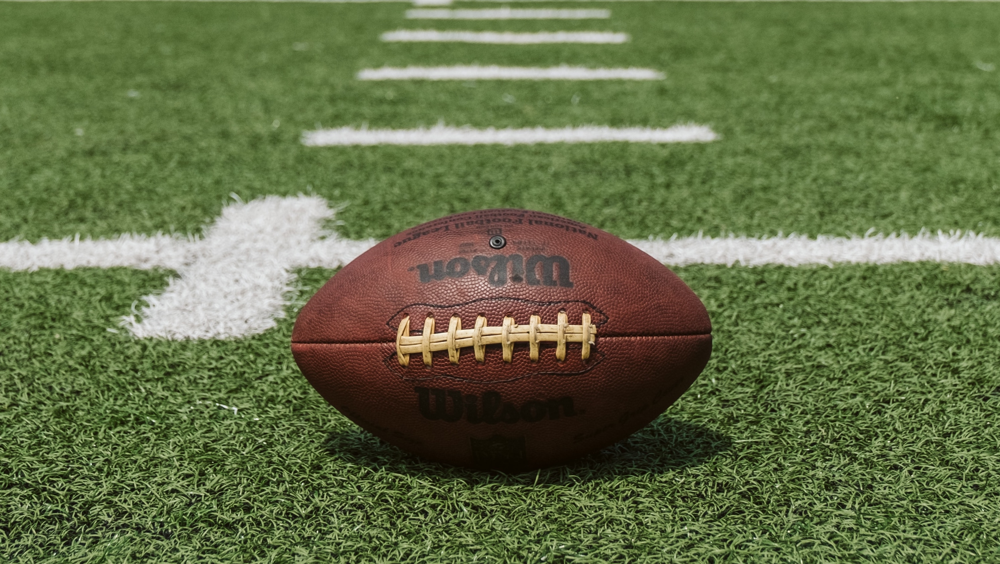

Football.
Football, a fun and dangerous sport.American football evolved from the sports of rugby and soccer. Rugby, like American football, is a sport where two competing teams vie for control of a ball, which can be kicked through a set of goalposts or run into the opponent's goal area to score points. What is considered to be the first American football game was played on November 6, 1869, between Rutgers and Princeton, two college teams. They consisted of 25 players per team and used a round ball that could not be picked up or carried. It could, however, be kicked or batted with the feet, hands, head or sides, with the objective being to advance it into the opponent's goal. Rutgers won the game. Collegiate play continued for several years with matches played using the rules of the host school. Representatives of Yale, Columbia, Princeton and Rutgers met on October 19, 1873, to create a standard set of rules for use by all schools. Teams were set at 20 players each, and fields of 400 by 250 feet, were specified. Harvard abstained from the conference, as they favored a rugby-style game that allowed running with the ball.[10] After playing McGill University using both Canadian and American rules, the Harvard players preferred the Canadian style of having only 11 men on the field, running the ball without having to be chased by an opponent, the forward pass, tackling, and using an oblong instead of a round ball.

An 1875 Harvard-Yale game played under rugby-style rules was observed by two Princeton athletes who were impressed by it. They introduced the sport to Princeton, a feat the Professional Football Researchers Association compared to "selling refrigerators to Eskimos".[10] Princeton, Harvard, Yale, and Columbia then agreed to intercollegiate play using a form of rugby union rules with a modified scoring system.[13] These schools formed the Intercollegiate Football Association, although Yale did not join until 1879.
catch up and watch a NFL game.